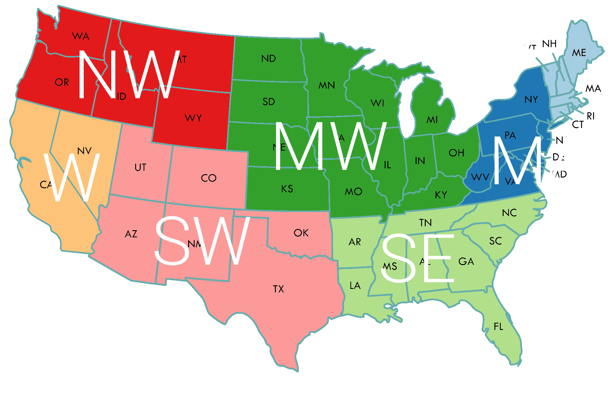

There are more than 80,000 chemicals used in industry and commerce.
How many of them do you think are regulated in drinking water in the United States?
Only 96 out of 80,000! The majority of chemicals in drinking water are NOT regulated.
What have been done? What do the latest data show?
What about your own county? What can you do?
This website allows you to find out more about tap water quality in your home county, as well as the entire continental US.
We will look closer into 28 potentially most harmful chemicals, which are currently beyond government's regulation.
CLICK on the circle to explore the 28 chemical contaminants covered in this interactive website, and the label to learn more about these chemicals.
The graph presents all the counties in the US. The y-axis is the Water contamination index*. Lower scores mean better quality. The x-axis is the number of water samples tested in a county. Higher numbers mean more extensive examination. The bubble size represents the population size of a county.
*Water contamination index = log base 10 of ratio between concentration and Method Reporting Limit (MRL).
e.g., chemical X is detected at 100 times the MRL, then its water contamination index is log_10(100)=2.

Cindy is a doctoral candidate in Environmental Health at Harvard T.H.Chan School of Public Health. Her thesis examines drinking water contaminants in the U.S. and their relevant human health risks.
Daniel is a candidate for Masters in Design Studies (MDes-- Art, Design, and the Public Domain) at Harvard University. He received a Bachelor of Architecture from Cornell University and works in a variety of design media.
Paul is a candidate for Masters in Public Administration in International Development at Harvard University. He specializes in data analysis and econometrics. He gathered professional experience at the World Bank and Procter&Gamble eBusiness.